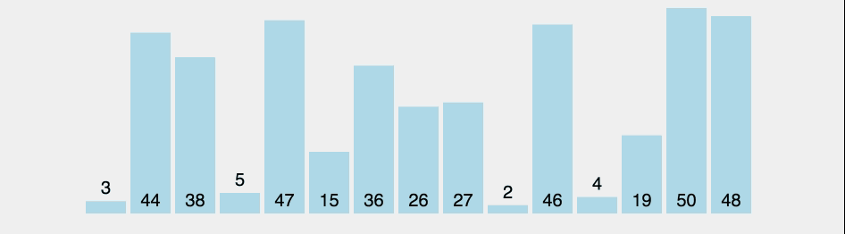

Selection Sort Algorithm work on the Principal of Divide and Conquer. It picks an element as pivot and partitions the given array around the picked pivot. There are many different versions of quickSort that pick pivot in different ways.
selection Sort Implementation
The
Syntax
For Selection
Sort In Javascript
function selectionSort(inputArr) {
let n = inputArr.length;
for(let i = 0; i < n; i++) {
// Finding the smallest number in the subarray
let min = i;
for(let j = i+1; j < n; j++){
if(inputArr[j] < inputArr[min]) {
min=j;
}
}
if (min != i) {
// Swapping the elements
let tmp = inputArr[i];
inputArr[i] = inputArr[min];
inputArr[min] = tmp;
}
}
return inputArr;
}
The
Selection
Sort
Algorithm
Analysis
Best Case: O(n^2)
Average Case: O(n^2)
Worst Case: O(n^2)
Space Complecity: 1
Selection Short Algorithm are Internal Shorting Algorithm
Selection Short Algorithm are Non-Recursive Shorting Algorithm
Stability: No Selection Short Algorithm Are Not Stable Algorithm
Adpative: No Selection Short Algorithm Are Not Adpative Algorithm